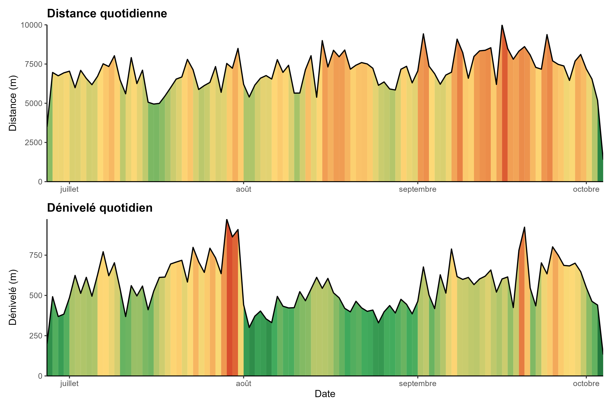

Déplacement quotidien
Le traitement des points GPS permet de calculer les distances et dénivelés cumulés quotidiens parcourus par les brebis tout au long de la saison (moyenne de toutes les brebis équipées). On note des chiffres importants (800 à 1 000 m de dénivelé cumulé quotidien) sur la période mi-août – fin septembre ; cela s’explique par la configuration de l’alpage : un seul parc de nuit dessert les quartiers d’août (vaste secteur et très pentu) et une seule cabane est disponible. Pour exploiter correctement ce quartier, les circuits journaliers sont donc rallongés et fortement dénivelés.
Utilisation par parc de nuit
Suite à la prédation liée au retour du loup, l’obligation de parquer les brebis le soir fait du parc de nuit un élément majeur du schéma de pâturage. Chaque matin, les brebis quittent le parc puis y reviennent au crépuscule ; ce fonctionnement contraint fortement les circuits quotidiens et les possibilités d’exploitation des différents quartiers. On retrouve généralement un parc de nuit par quartier, souvent associé à une cabane. Sur l’ensemble des alpages étudiés, trois parcs sont courants : un pour juin-septembre et un pour juillet-août. Sur Rouanette, seulement deux parcs sont utilisables : le premier pour juin-septembre, le second pour juillet-août ; c’est une contrainte due au manque de cabanes de soutien dans les quartiers d’été.


Analyses du schéma de pâturage
En croisant les indicateurs « comportement » et « chargement », on obtient le nombre de jours où chaque pixel de l’alpage a été pâturé. Les parcs de nuit apparaissent comme des unités structurantes, mais on peut aussi distinguer les zones simplement explorées (1 jour) et les zones vraiment exploitées. Croisées aux cartes de végétation, ces informations permettent d’identifier les secteurs sous-exploités (nardaies par exemple) ou ceux où la pression de pâturage est trop forte sur des habitats sensibles (cônes à neige, zones humides). Sur Rouanette, la nardaie est peu pâturée ; ce n’est pas un choix mais la conséquence de conflits d’usage sur des terrains privés qui retardent la date d’accès. La végétation y est donc souvent vieillissante, rendant la gestion de cet habitat complexe.